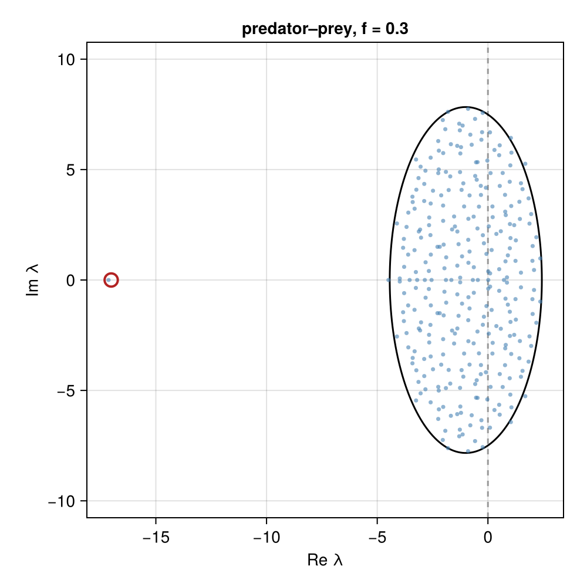
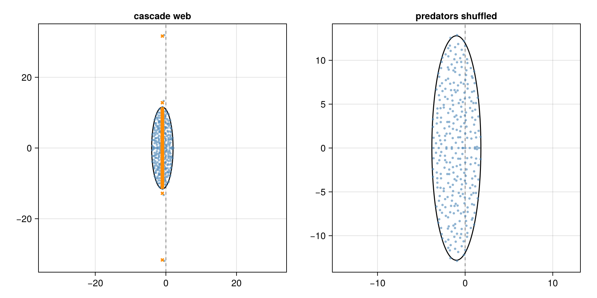

Community matrices and stability
random_predprey builds a random Jacobian with a web's structure: for each link where predator j eats prey i, J[i, j] = -|a| and J[j, i] = f |b|, with a, b drawn from a distribution and f the conversion efficiency, and -1 on the diagonal.
The spectral_abscissa decides local stability and the asymptotic return rate; the numerical_abscissa decides reactivity, whether some perturbations grow at first.
The elliptic law
For a large random matrix whose off-diagonal entries have variance σ² and pairs (M[i, j], M[j, i]) with correlation ρ, the eigenvalues fill an ellipse centered on the mean diagonal with semi-axes √(Sσ²)(1 ± ρ) (Sommers et al. 1988; Allesina & Tang 2012). elliptic_law estimates this from a matrix's moments, including the zero pairs of a sparse matrix, so the connectance enters through σ². A nonzero mean adds an outlier at θ + ρSσ²/θ from the center, θ = (S - 1)μ (O'Rourke & Renfrew 2014).
using FoodWebs, Distributions, Random, CairoMakie
rng = Xoshiro(1)
J = random_predprey(rng, may_network(rng, 300, 0.1), Normal(), 0.3)
fig, ax = eigenplot(J; title = "predator–prey, f = 0.3")
fig
Predator–prey pairs have negative correlation, so the ellipse is narrow along the real axis, and with f < 1 the negative mean adds an outlier on the stable side.
The elliptic law assumes the pairs are exchangeable. Structured food webs break this: in a cascade web every predator's effect lies above the diagonal and every prey's effect below, and the spectrum reaches far beyond the ellipse along the imaginary axis. The eigenvalues of the expected_community_matrix given the web (crosses) give that reach to about 1%; the real parts, and so stability, come from the fluctuations around the mean.
web = cascade_network(rng, 300, 0.1)
fig = Figure(size = (900, 450))
eigenplot!(Axis(fig[1, 1]; title = "cascade web"), random_predprey(rng, web, Normal(), 1.0);
expected = expected_community_matrix(web, Normal(), 1.0))
eigenplot!(Axis(fig[1, 2]; title = "predators shuffled"), random_predprey(rng, web, Normal(), 1.0; shuffle_prey = true))
fig
FoodWebs.random_predprey — Function
random_predprey([rng], web, dist, f; shuffle_prey = false)A random community (Jacobian) matrix with the structure of the food web web, using the standard convention that J[i, j] is the effect of species j on the growth of species i.
For each link where predator j eats prey i (web[i, j] == 1), the effect of the predator on the prey is J[i, j] = -|a| and the effect of the prey on the predator is J[j, i] = f |b|, with a, b ~ dist independent and f the conversion efficiency. The diagonal is -1. Cannibalistic links are ignored.
When two species eat each other, each entry of the pair sums the two links' effects: species i loses |a| to j and gains f |b'| from eating j, so J[i, j] = f |b'| - |a|, of either sign, with all four magnitudes drawn independently.
With shuffle_prey = true the two entries of each pair are randomly swapped, so the predator–prey sign structure is kept but not which species is the predator.
FoodWebs.expected_community_matrix — Function
expected_community_matrix(web, dist, f; shuffle_prey = false)The mean of random_predprey(web, dist, f; shuffle_prey) given the web: -E|a| on each link's entry for the predator's effect on its prey, f E|a| on the prey's effect on its predator, both summed for species that eat each other, and -1 on the diagonal, with E|a| the mean magnitude of dist, computed by the midpoint rule over 20 000 quantiles (relative error about 1e-5 for normal and exponential magnitudes, below 1e-3 for heavy tails such as a t distribution with 3 degrees of freedom). With shuffle_prey = true each entry of a linked pair is the mean of the two, (f - 1) E|a| / 2.
For structured webs such as cascade and niche webs, where the elliptic law's exchangeable pairs do not hold, the eigenvalues of this matrix give the largest imaginary part of random_predprey's spectrum to about 1%, and the spread of imaginary parts to within about 15% (the fluctuations widen it). The real parts, and so stability, come from the fluctuations around the mean: the expected matrix is stable, and with f = 1 it is the identity's negative plus a skew-symmetric matrix, with every eigenvalue at real part -1.
FoodWebs.spectral_abscissa — Function
spectral_abscissa(M)The largest real part of the eigenvalues of M. The equilibrium of a system with Jacobian M is locally stable if this is negative, and its magnitude is the asymptotic return rate after a perturbation (resilience).
FoodWebs.numerical_abscissa — Function
numerical_abscissa(M)The largest eigenvalue of the symmetric part (M + M') / 2 of M. This is the maximum instantaneous growth rate of a perturbation, so the equilibrium is reactive (some perturbations initially grow) if this is positive (Neubert & Caswell 1997). It bounds the spectral_abscissa from above, with equality when M is normal.
FoodWebs.λ_stability — Function
λ_stability(M)Alias for spectral_abscissa.
FoodWebs.ν_stability — Function
ν_stability(M)Alias for numerical_abscissa.
FoodWebs.elliptic_law — Function
elliptic_law(M)The EllipticLaw prediction for the eigenvalue support of M, estimated from the moments of its off-diagonal pairs, including the zero pairs of a sparse matrix, so that the connectance enters the variance: a matrix whose pairs are nonzero with probability C and have variance σ² when nonzero has σ2 = Cσ².
The bulk is centered on the mean diagonal, and a nonzero mean of the off-diagonal entries adds the outlier of O'Rourke & Renfrew (2014). The prediction assumes the pairs are exchangeable across the matrix; structured food webs, such as cascade webs with predators' effects above the diagonal and prey's effects below, have outliers that this does not capture.
O'Rourke, S. & Renfrew, D. Low rank perturbations of large elliptic random matrices. Electron. J. Probab. 19, 1–65 (2014).
When the two marginal variances of the pairs differ, the variance used is their geometric mean, which is also the denominator of the pair correlation.
FoodWebs.EllipticLaw — Type
EllipticLawThe elliptic law prediction for a matrix, returned by elliptic_law.
Fields
S: the number of speciesμ: the mean of the off-diagonal entriesμ_diag: the mean of the diagonal entries, the center of the ellipseσ2: the variance of the off-diagonal entriesρ: the correlation of the off-diagonal pairs(M[i, j], M[j, i])x_semi_axis: the semi-axis along the real axis,√(Sσ2)(1 + ρ)y_semi_axis: the semi-axis along the imaginary axis,√(Sσ2)(1 - ρ)outlier: the predicted real outlier eigenvalueμ_diag + θ + ρSσ2/θfrom the mean, withθ = (S - 1)μ, orNaNwhen|θ| ≤ √(Sσ2)and the mean leaves no outlier
FoodWebs.offdiag_pairs — Function
offdiag_pairs(M)An S(S - 1)/2 × 2 matrix whose rows are the off-diagonal pairs [M[i, j], M[j, i]], i < j, of the square matrix M.
FoodWebs.offdiag_pairs_nz — Function
offdiag_pairs_nz(M)A 2 × n matrix whose columns are the off-diagonal pairs [M[i, j], M[j, i]] for the upper-triangle entries with M[i, j] != 0.
FoodWebs.shuffle_pairs — Function
shuffle_pairs([rng], M)Randomly swap each off-diagonal pair (M[i, j], M[j, i]) with probability 1/2, leaving the diagonal alone. This gives a matrix whose upper and lower triangles have the same marginal distribution while keeping the pair structure.